Agora
A dose do momento, num só ecrã.
O ecrã «Agora» mostra o que tomar agora, o que ficou por marcar e o que vem a seguir. Um toque em «Tomei» e está feito. Letra grande e botões grandes, sem registo.
Lembrete de medicamentos
O lembrete de medicamentos à hora certa, para si e para quem cuida. Letra grande, botões grandes e sem registo.
Grátis · «Família e cuidador» em compra única, sem subscrição
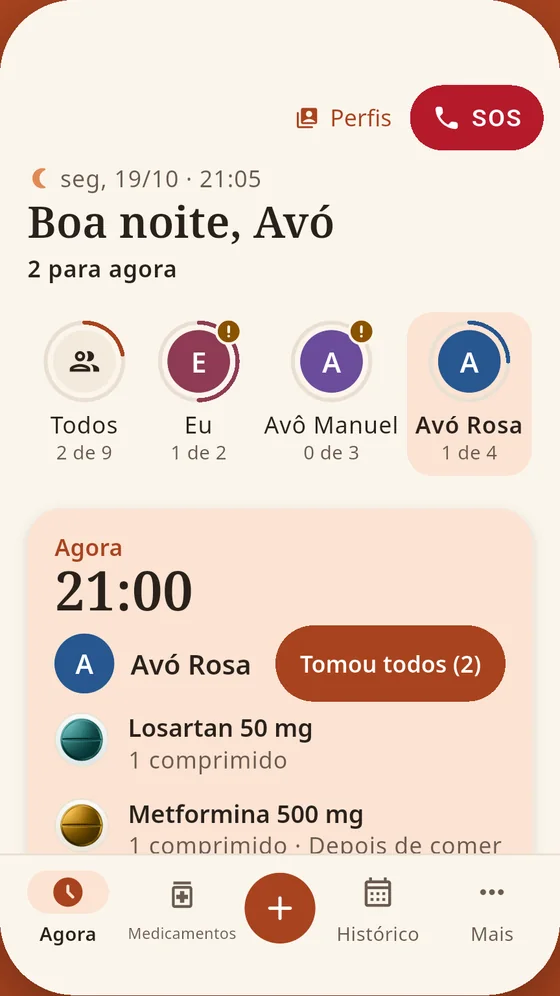
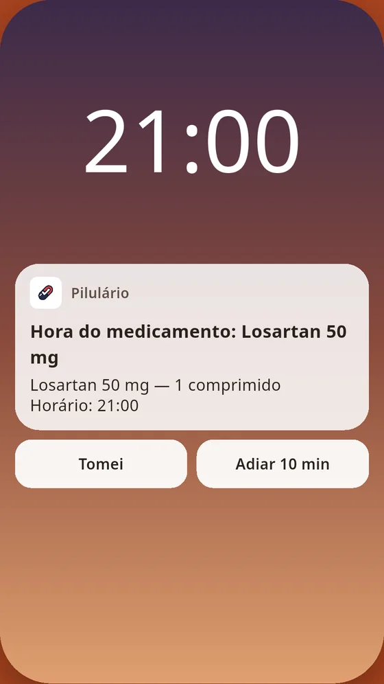
Feito para quem toma medicamentos todos os dias e para quem cuida de alguém.
Agora
O ecrã «Agora» mostra o que tomar agora, o que ficou por marcar e o que vem a seguir. Um toque em «Tomei» e está feito. Letra grande e botões grandes, sem registo.
O aviso
O aviso traz os botões «Tomei» e «Adiar 10 min». Escolha como quer ser avisado: «Discreto», «Insistente» — repete até marcar — ou «Alarme».
Stock
Conte o que há na caixa e o Pilulário mostra quando vai acabar. «Comprei mais» soma a caixa nova ao que sobrou.
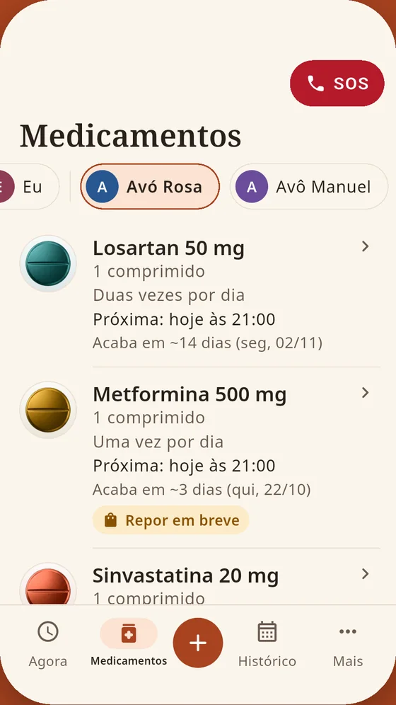
Histórico
O dia, a semana e o mês: o que foi tomado, saltado e por quem. Enganou-se? Anule a marcação.
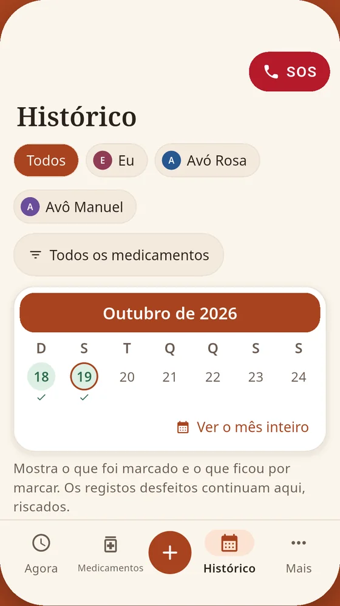
Para quem cuida
Cada pessoa com a sua cor e fotografia, os seus medicamentos e os seus avisos. Anotações, alergias e cuidados ficam à vista de quem vai dar o medicamento.
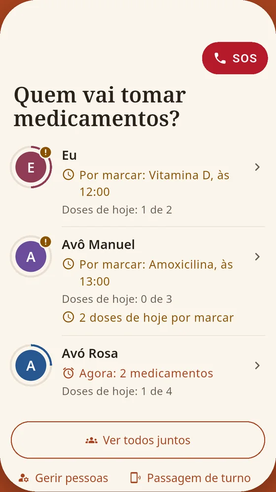
Passagem de turno
Vai deixar alguém a cuidar? Passe os medicamentos pela câmara, sem internet, e receba de volta o relatório do que foi dado.
Saúde dos lembretes
A aplicação verifica se o telemóvel está a deixar os avisos tocar e mostra o que ajustar. E o botão SOS tem os números de emergência e o telefone de quem cuida.
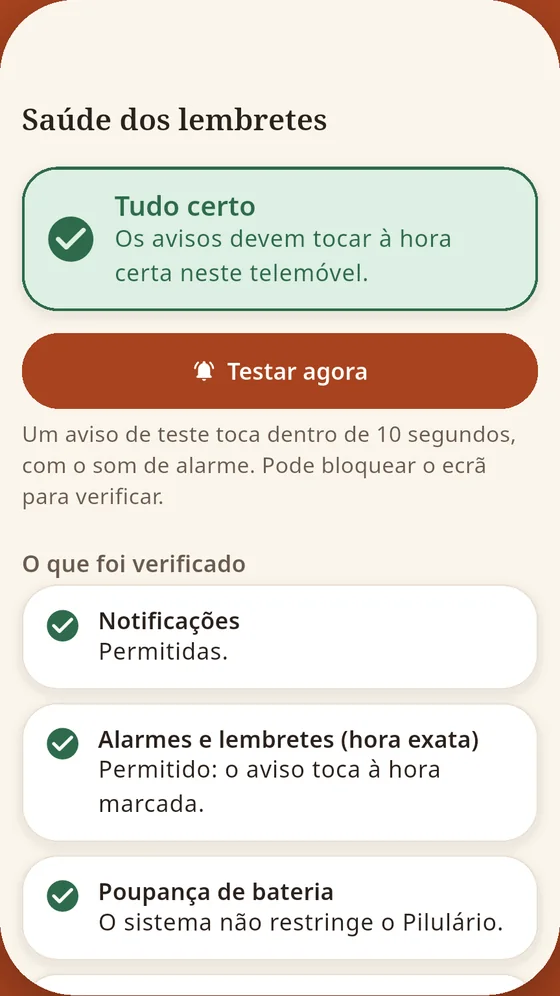
Avisos, stock, histórico e SOS são grátis, sem limite de medicamentos. A compra única «Família e cuidador» acrescenta o que facilita a vida de quem cuida de mais pessoas.
Os ecrãs da aplicação.
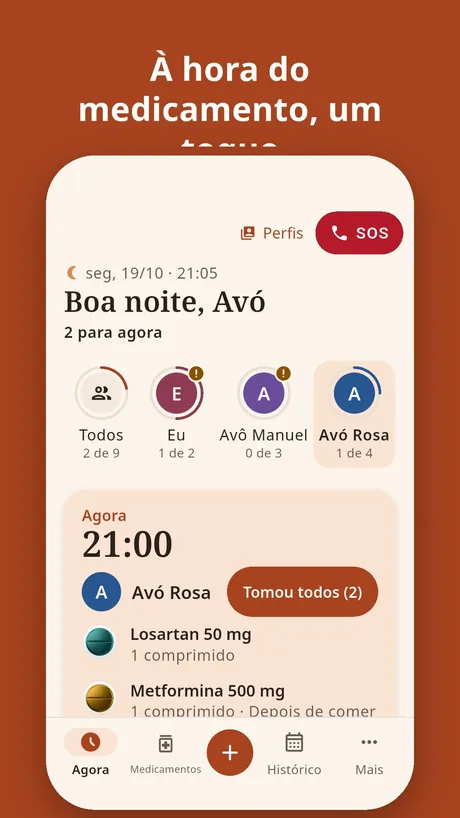
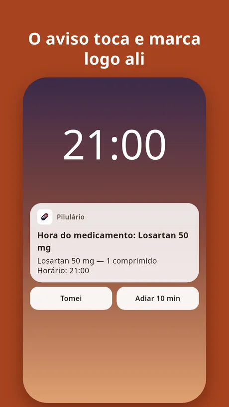
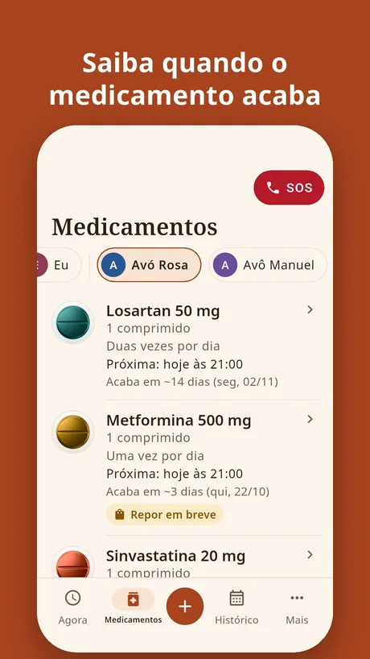
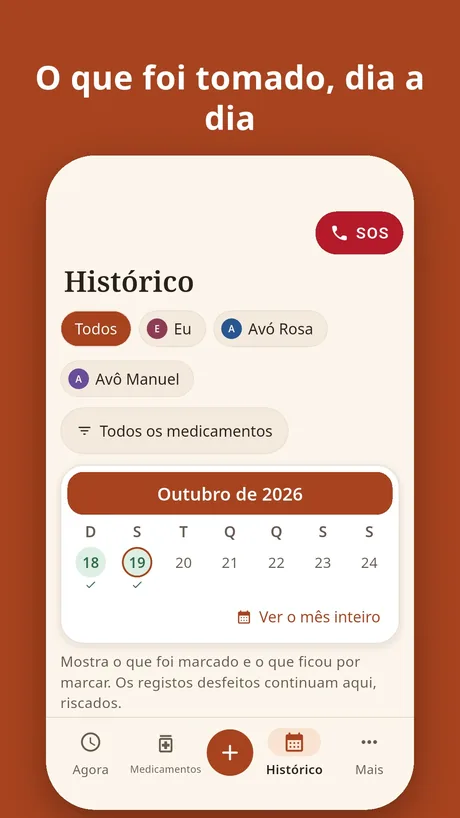
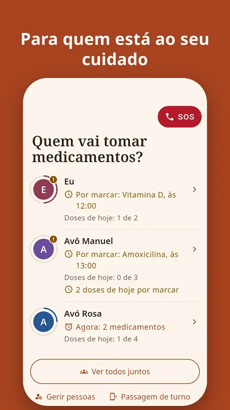
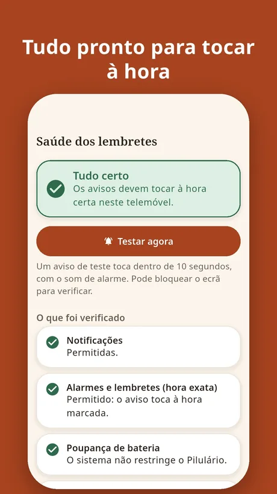
Sem conta, sem anúncios e sem recolha de dados. O Pilulário não usa a internet: o que escreve fica no seu aparelho e só sai quando partilha um resumo, exporta a cópia de segurança ou passa o turno para outro telemóvel.
Sim. O alarme, o stock, o histórico e o SOS são grátis, sem limite de medicamentos. A compra única «Família e cuidador» acrescenta várias pessoas, a passagem de turno, as anotações e o modo Avançado. Não há subscrição nem anúncios.
Sim. A aplicação não usa a internet: os avisos, os dados e a passagem de turno funcionam com o telemóvel offline. Só a compra passa pela loja.
Não. Não há registo. Para levar os dados para um telemóvel novo, exporte a cópia de segurança em ficheiro.
Abra «Saúde dos lembretes»: a aplicação verifica as permissões de notificação, de alarme e de bateria e mostra o que ajustar. Pode testar um aviso na hora.
Não. O Pilulário é um lembrete: não é um dispositivo médico, não sugere medicamentos, doses ou horários e não substitui a orientação do seu médico ou farmacêutico.
Descarregue grátis no iPhone, no iPad ou no Android.